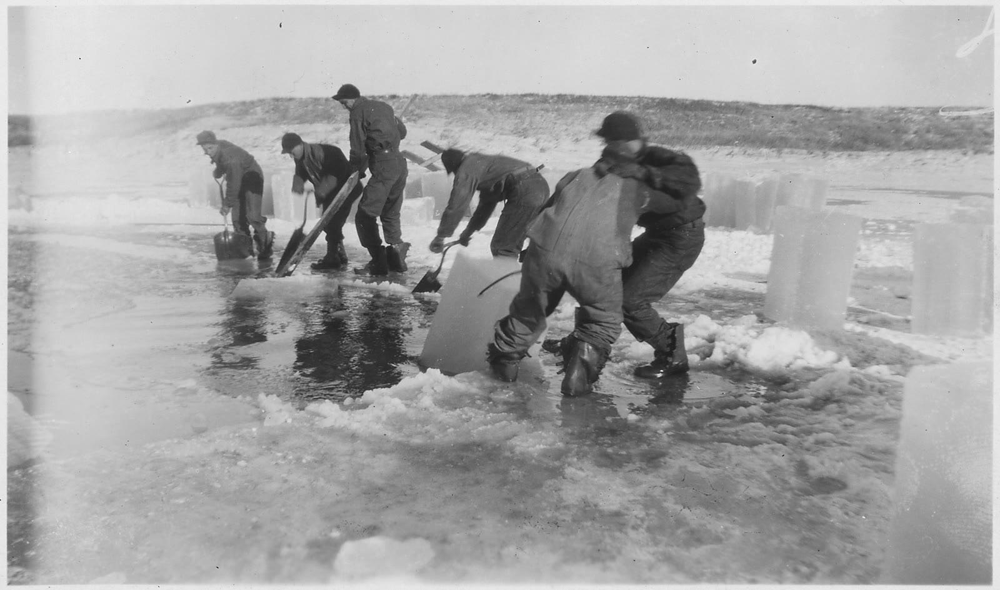
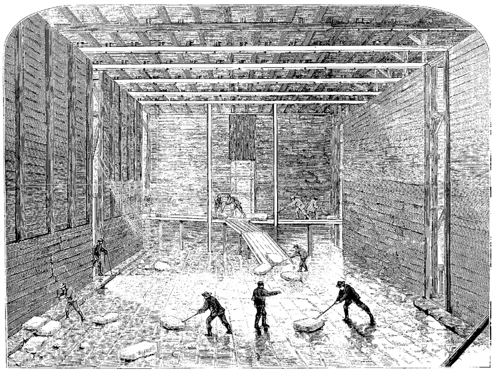

Science desk · Earth resources · History
Ice was mined. For most of the trade the pit was a frozen lake, a river, or a mountain glacier close enough to haul. Crews cut it, graded it, packed it, and watched a share of the cargo turn back into water before anyone was paid. That is an ore business with a cruel recovery rate. It is not a polar business. People did not mine tons of ice at the poles and ship them as a bulk commodity. The historical crop came from ponds, lakes, rivers, and a few highland glaciers. Polar sea ice is salty. Antarctic icebergs were studied as a water supply in the twentieth century and were not delivered. The place where ice is now being prospected as an ore is the lunar south pole.

The tempting picture is a fleet at the ice cap, saws in the polar night, holds full of the Earth’s refrigerator. The documents point somewhere duller and more interesting. Kings, companies, and villages took ice where winter already made it and where summer would pay for it. Distance was a melt calculation. A pond outside Boston could reach Calcutta. The Ross Ice Shelf could not, not as a completed voyage.
Treat the rest of this page as a mine report on a mineral that vanishes. Geologists count ordinary water ice as a mineral: ice Ih, hexagonal, formula H2O, a grandfathered species on the IMA list. A glacier is that mineral in bulk. A cargo of it is a stockpile with a clock.
Ore literacy is grade, tonnage, and what the mill actually recovers. Ice has the same three numbers, with the mill running backward the whole way to market. Grade is clarity and thickness: deep, clear pond ice against cloudy snow-ice or a stained river. Tonnage is how many blocks a cold week will give you. Recovery is whatever is still solid when the hatch opens. Pair this with the grade-and-tonnage toy on ore mining, and with the material rushes on the history desk. Ice is the rush you can drink, and then you cannot.
There was no futures pit with ice listed beside wheat. There was a seasonal forward sale. Historians of the Norwegian trade describe ice marketed before the winter was finished: contracts for the following spring’s shipments were closed in September and October. A mild season then had to be met out of a thinner lake. Price followed the crop. That is commodity behavior. It is not an exchange.
The earliest icehouses in the written record belong to the kingdom of Mari, on the Euphrates, in the eighteenth century BCE. Zimri-Lim built them. A dedication for the icehouse at Terqa — bīt šurīpim in the Akkadian — calls him the builder of an ice store “which never before has any king built on a bank of the Euphrates,” and says the ice was conveyed from a place the tablet no longer names. Another text, ARM XIV 25, gives a plan on the order of six meters by twelve. Jack M. Sasson published that reading in Biblical Archaeologist in 1984. The Encyclopaedia Iranica treats the Mari letters as the first references to an icehouse, with blocks brought from nearby mountains to cool the king’s wine.
Sasson is careful about the rest. The shaded freezing pond he sketches is an analogy to later Iran, not a Mari blueprint. The hard sentence is the haul: ice was brought in. The broken place-name is not a polar coordinate.
In the Book of Songs, the poem “Seventh Month” keeps a labor calendar: ice is hewn, stored in the lingyin, and later opened with lamb and scallion. The poem belongs to the Zhou tradition and does not come with a modern date. The Rites of Zhou assign an officer, the lingren, to cut ice and keep more on hand than one month will use. That is a stockpile rule. The ice is the winter’s own.
Classical drinkers wanted the cold more than they wanted a mine. Snow came down from mountains and sat in covered pits. Seneca disliked the luxury. Pliny, in the Natural History (31.40), credits Nero with a cleaner trick: boil the water, sink the glass in snow, and take the chill without drinking the snow. A Heidelberg survey of the ancient economy finds the same custom across the Roman Mediterranean — pits where the climate allowed, and moralists who would not have bothered if the habit were rare. None of it is a shipment from Thule.
When Akbar’s court stood in the Punjab, ice became a department. Abu’l Fazl’s Āʾīn-i Akbarī, in Blochmann’s translation, starts the habit in the thirtieth year of the era he is counting, “when the imperial standards were erected in the Punjab.” The ice came from Panhan, in the northern mountains, about forty-five kos from Lahore — his unit, a regional haul. Ten boats worked the river, one expected daily, with carriages, bearers, relay horses, and an elephant besides. Bundles ran six to twelve sers as the heat rose. All ranks used ice in summer; nobles used it all year. Profit was best by water, worst by porter. The ore body is a Himalayan district, not an ocean.
The Persian yakhchāl — mud-brick dome, deep pit, shaded pool — is the picture people now mean by ancient ice mining. The method is real. C. J. Wills, on Shiraz in 1891, described a few inches of water admitted to a pond, frozen by morning, built up night after night, then stored. John Fryer and other seventeenth-century travelers already found ice in use. What the buildings will not support is a casual date of 400 BCE. Archnet is blunt: surviving yakhchāls are not securely dated before the Safavid period. The ice was frozen on site, or brought from nearby high ground. The dome is a warehouse for a local crop.
Seventeenth- and eighteenth-century European estates built the same idea in brick: pack a vault in winter, open it in summer. On Etna, heritage accounts describe neviere — pits and caves where snow was compacted, cut, wrapped in fern and chestnut leaves, and carried toward town, in those accounts even by ship to other Italian ports and to Malta. Elevation did the work a polar latitude is sometimes asked to do.
Frederic Tudor, still in his early twenties, made a local crop into an export. In 1806 he sent about 130 tons of Massachusetts ice to Martinique. The first seasons lost money; storage in the tropics mattered as much as the ship. He kept building icehouses in warm ports. A paper in the Economic Journal takes that 1806 cargo as the start of the long-distance trade, then follows the insulation: sawdust from the timber mills in the hold, and a fitted ice chamber on the longest routes.
Uniform blocks changed the arithmetic. Trade histories date Nathaniel Jarvis Wyeth’s horse-drawn ice plow to 1825. It scored the pond so saws could take cakes of one size. Irregular chunks melt along every extra face. Fitted blocks melt more like a single mass. The plow is a mining tool. It turns a sheet of mineral into a unit you can stow.

Calcutta shows the recovery problem in public. The Mechanics’ Magazine (1836) says about 180 tons were stowed in early May 1833, built tight under hay and tan, and discharged in mid-September. Gauges and the ship’s draught put the loss near fifty-five tons by Diamond Harbour, more in the river, more in landing. About a hundred tons reached the ice house. Roughly half the cargo survived four months, and that half still sold. Thoreau, watching a hundred men cut Walden in the winter of 1846–47, wrote the literary version: Charleston and New Orleans, Madras and Bombay and Calcutta, drink at his well, and “the pure Walden water is mingled with the sacred water of the Ganges.”
Melt was the ordinary tax. A Scenic Hudson history of the valley counts about 135 icehouses between Poughkeepsie and Albany in the 1880s, and on the order of 20,000 seasonal workers. Well-run houses might lose near a fifth of the crop; many firms expected to lose half. The ice sold highest in summer, when the pile was thinnest. In that account, three Knickerbocker houses at Rockland Lake held nearly 100,000 tons when Edison filmed them in 1902. Hall’s 1880 figures, as used in the Economic Journal paper, put consumption in the twenty largest U.S. cities near four million tons in 1879, and an 1881 encyclopedia estimate puts New York near 500,000 tons a year. Those are city appetites, not one company’s output. Ice had become infrastructure: meat, beer, hospitals, households, the fishing fleet.
Clear ice was the high grade. Wenham ice, from Massachusetts, was sold in London from the 1840s as unusually pure, against English pond ice condemned as dirty. The brand outlived the pond. Historians of the Norwegian import trade note that ice loaded for the Wenham Lake Ice Company at Drøbak came from Lake Oppegård, which the company renamed Lake Wenham so the American name could ride on Norwegian water.
Hold those five against the pole and the geography is the argument. Every durable trade sits where ice forms for free and a customer sits inside a melting radius the ship, the mule, or the boat can beat.
Sea ice is a poor ore of drinking water. As it freezes it traps brine in pockets and channels; the National Snow and Ice Data Center treats that salinity as part of what sea ice is. The trade wanted freshwater mineral — lake ice, river ice, glacier ice. An iceberg is freshwater, because it calved from a glacier or an ice shelf. That is why icebergs, not the frozen ocean, are the thing engineers keep proposing to tow.
Two historical episodes are the nearest the nineteenth century came, and neither is a polar industry.
The Antarctic proposal is a 1973 paper, not a voyage. Weeks and Campbell modeled a large tabular berg towed from an ice shelf — Amery toward Western Australia, Ross toward the Atacama. Under their assumptions, transit ran past 107 days and 145 days, with more than half the ice still there. They called the problems solvable and asked for more study. The study happened. The tow did not.
Prince Mohammed Al-Faisal’s Iceberg Transport International wanted an Antarctic berg for Arabia and funded the 1977 iceberg conference at Ames, Iowa. Accounts of that meeting describe a small block of Alaskan glacier ice — one report says two tons — flown in for the delegates’ drinks. The Arabian berg did not follow. Peter Wadhams, who was in that circle, later told the BBC the equatorial route failed the basic constraint: a berg towed across warm water is a melt calculation you lose. The project was shelved in the early 1980s. Later proposals, including tows from Newfoundland toward the Canaries, stayed on paper. A conference sample and a stack of studies are the polar shipping record.
Factory ice did not end the crop in a single year. By 1900, the historians of Britain’s Norwegian imports write, London and many provincial cities had ice factories, and fishing ports were putting plants on the dock for trawlers. Natural ice still competed into the First World War, on price and on a reputation for purity. Then the reputation reversed. The same literature records sanitary fights over natural ice in the decades the numbers rolled over: after 1898, volume and value fell, to 17,251 register tons in 1929, with traces still moving as late as the 1960s.
A river that receives a city is a bad ice mine. Sawdust can insulate a clean block. It cannot launder a sewage outfall. Through the early twentieth century the household refrigerator took the rooms that had been built around an ice card in the window. What survived of harvested ice was a specialty, or a habit under a glacier, as on Chimborazo, where Ushca was still cutting blocks for market stalls long after the village had other ways to keep food.
The present polar harvest is real, and it is the wrong size for the old story. Off Newfoundland, bergs that left Greenland glaciers drift south. Ed Kean, supplying Canada’s Iceberg Vodka, told the Globe and Mail that a best day was seven hundred scoops — about 200,000 litres, on his figure — in a season from May into early August. New Scientist photographed the work in 2015 and noted tour operators who did not want a scenic berg broken up. Advertised ages in the tens of thousands of years are a seller’s description of ice-sheet ice, not a date on the block. A boasted day is a pond, not a Tudor year.
Greenland’s version picks up ice that has already calved. The Guardian reported in January 2024 that Arctic Ice, co-founded by Malik V. Rasmussen, was shipping fjord ice from near Nuuk to bars in the UAE. CNN put an early container near 22 tons; other reports said about 20 tonnes. The company says the bergs would have melted anyway. Glaciologist Heidi Sevestre, interviewed by RFI, called the carbon story unconvincing. Twenty tons beside Hall’s four million is a luxury mineral, not a revived ice fleet. It is the strongest honest case of harvesting polar-sheet ice on Earth now. It is not the nineteenth-century trade moved north.
The ore body people are actually laying plans against is lunar. Permanently shadowed craters near the Moon’s south pole stay cold enough to hold water ice. On 9 October 2009 the LCROSS impact in Cabeus threw up a plume that spectroscopy read as water. Colaprete and colleagues estimated 155 ± 12 kilograms of water vapor and ice in the instrument’s field of view, and a concentration of about 5.6 ± 2.9 percent by mass in the regolith that reached sunlight. That is a point sample from one crater floor, with a wide error bar. It is evidence of ice. It is not a reserve statement, and it is not a mine.
NASA’s VIPER rover was built to do the prospector’s job: drive, drill, and map where the ice sits. The agency stopped the project in July 2024 over cost and schedule, then in September 2025 awarded Blue Origin a CLPS task order to land it at the south pole in late 2027. PRIME-1, a drill and a mass spectrometer, reached the region on Intuitive Machines’ IM-2 on 6 March 2025. The lander was on its side. NASA’s science page says the instruments did not accomplish their goals; gases the spectrometer saw fit the spacecraft, not a confirmed lunar sample. Prospecting is a program. It is not yet a mine.
If that ice is dug, it will be ore in the strict sense: a mineral taken for what you can make from it. Water to drink, oxygen to breathe, hydrogen and oxygen to burn. Mars has the other unfinished file — Phoenix confirmed subsurface water ice on the northern plains in 2008, and the caps are mapped from orbit — and nobody is cutting it. On Earth the ice crop was a climate rent that refrigeration canceled. Off Earth, ice is the rent you haul every kilogram to avoid.
Dates below are the ones the sources will hold. A poem without a year stays a tradition. A model stays a model. Register tons stay register tons.
Zimri-Lim’s icehouse at Terqa. The dedication says ice was conveyed from a place the tablet leaves blank. Nearby mountains, in the Iranica reading. A freezing-pond like later Persia is Sasson’s analogy, labeled as such.
Book of Songs, “Seventh Month”: ice hewn, stored in the lingyin, opened with lamb and scallion. The Rites of Zhou give the work to the lingren.
Roman snow from the mountains, kept in pits. Pliny credits Nero with boiling water and chilling the glass in snow so the drink stays cold and the snow stays out of it.
Akbar’s court in the Punjab. Ice from Panhan, about forty-five kos from Lahore, by boat, carriage, and bearer. Abu’l Fazl’s logistics, not a polar voyage.
European travelers describe Persian ice in use. Standing domed yakhchāls are not securely dated before the Safavid era. The ice is frozen locally in winter ponds.
Tudor sends about 130 tons of New England ice to Martinique. The export trade begins. The first seasons lose money.
Wyeth’s horse-drawn ice plow, in the standard history of the trade. Uniform blocks stow tighter and melt slower.
About 180 tons leave for Calcutta in May. About 100 tons reach the ice house in September. A contemporary mechanics journal does the loss arithmetic.
Thoreau watches the Walden harvest and sends it, on the page, toward Charleston, New Orleans, Madras, Bombay, and Calcutta.
Wenham Lake ice on sale in London, marketed as pure. Later the brand name is hung on a Norwegian lake the importer renames Wenham.
11 April: the first Russian-American lake-ice cargo reaches San Francisco from Sitka, at $75 a ton. The reliable ice is soon cut on Woody Island, Kodiak, from a dammed lake.
A missed Sitka crop. Weeks and Campbell, citing an Alaskan account, say a ship loaded glacier ice at the Baird Glacier. A fallback, not a polar trade.
Nearly four million tons consumed in the twenty largest U.S. cities, in Hall’s figures as used by later economic history. New York alone is put near half a million tons a year.
Small icebergs towed and sailed from Laguna San Rafael, Chile, about 45° south, to Valparaíso and Callao. Patagonia. Not an ice shelf.
Norway’s export peak: 553,366 register tons. The decline is already visible in the next decade, under factory ice and a fight over whether natural ice is the clean product.
Norwegian exports down to 17,251 register tons. The household refrigerator finishes the job the ice plant started.
Weeks and Campbell publish an appraisal of towing Antarctic tabular bergs. A model with multi-month transits. No berg is delivered.
Ames conference on iceberg utilization. A ton or two of Alaskan glacier ice is flown in for the drinks. The Antarctic tow Al-Faisal wanted does not happen.
Phoenix confirms buried water ice on Mars. LCROSS, 9 October 2009, finds water in the Cabeus plume — a few percent by mass at that spot, with a large uncertainty.
Newfoundland bergs harvested for vodka and water. Greenland’s Arctic Ice ships on the order of 20 tons of fjord ice toward Dubai bars. Ushca, Chimborazo’s last ice merchant, dies in 2024.
VIPER canceled, then assigned to a Blue Origin landing planned for late 2027. PRIME-1 reaches the south-polar region on 6 March 2025; the lander is on its side and the ice assay is not made.
Keep going
Sibling lesson
Grade, tonnage, and what the process actually recovers — lithium paths included.
History desk
Bronze, iron, gold, silicon, information. Ice is the crop that could not stay in the warehouse.
Sibling essay
Another cited desk on what happens when a resource story gets two mechanisms mashed together.
Status
The science hub this essay hangs from.
Note. Educational history. Tonnages are the ones in the sources named above; where a figure is a company’s boast, a journalist’s round number, or a 1973 model, the sentence says so. Register tons are not short tons. Lunar concentrations are one impact site, not a mine plan. Nothing here is an investment, shipping, or resource-extraction proposal.